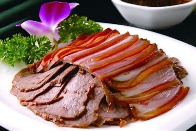

广饶肴驴肉
发布时间: 2023-04-07 4859 次浏览
-
广饶肴驴肉有悠久的历史.相传南宋建炎二年（１１２８年）,乐安关帝庙大殿落成，百官聚集朝贺。盛筵之上，佳肴繁多。唯肴驴肉受人青睐，被推为百味之冠。清同治十二年（１８７３年），广饶肴驴肉又经县城十一村的武举崔万庆举荐至兵部差务府并受称道。
自此，肴驴肉奉诏纳入京城宫御膳房，一直延续多年。光绪年间，戊戌七君子之首康有为曾经到广饶，他品尝肴驴肉后挥笔赋诗：“旅居京华骑驴郎，残羹冷炙豪门光，当年不知驴肉美，何事扣门却芳香。”。自那时起，广饶肴驴肉的名声即在全国张扬开去。
正宗的广饶肴驴肉出自广饶县城十一村崔家肉铺。崔家多年屠宰，积累了丰富的烹制驴肉的经验，其制作工艺也独具特色。先将洗净的驴肉断成大块，放入锅内加适量的水和一定比例的老汤（以往煮肉的汤汁），锅内置一布袋，内装芳香肴药一剂。有白芷、八角、肉蔻、丁香等十几味。药方剂量适度，配搭讲究，有的添香味，有的去腥膻。尔后，急火攻三小时许，开始视肉肥瘦采取除油或添油的措施。肉肥则从汤中除油，肉瘦则添加老汤或油料，始终将肉与油的比例控制在一定限度内。这时，汤中仅剩一层薄油罩住热气不易蒸腾，再用石头将肉压入汤内，改用文火焖蒸四五小时即可。
刚出锅的肴驴肉呈紫红色，内外一致。肉质硬实但易咀嚼，味道浓香却不油腻。因为汤中配搭中药，故夏天蝇不叮虫不咬，不会变质。食用时，横刀断丝，现出均匀的肉质，让人眼见心馋，用以佐餐或下酒是不可多得的美味佳肴。
广饶肴驴肉世代相传，一直保持很好的声誉。如今，崔氏家族中经营肴驴肉者竞相涌现。以“福盛”老字号得名的“福生”、“富胜”、“复升”大都继承了古老的传统工艺，肴制的驴肉深香馥郁、脍炙人口。近几年，为方便顾客携带与保存，又采用了真空包装，这将使广饶肴驴肉走向全国乃至世界。如今，广饶肴驴肉远销京津、东北、浙江一带，深受消费者的欢迎。
黄河文化旅游宣传平台
联系电话: 17753010787
版权所有：山东大学技术团队
技术支持：山东大学技术团队